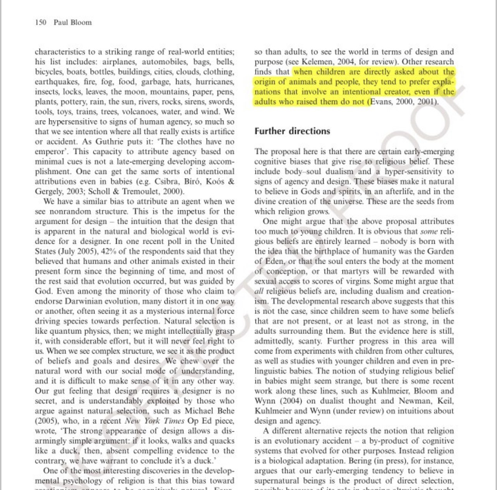

Asadullah Ali’s Philosophical Argument for Fitrah
This is also a response to atheists who say that belief in God is like belief in Santa Claus, Tooth Fairy, Flying Spaghetti Monster, etc
Premise 1: If meaning and explanation can only come from the natural world, then all conceptions of reality come from the natural world
Premise 2: If all conceptions of reality are derived from the natural world, then there must be a coherence of meaningful experiences
Premise 3: People believe that there is a transcendent reality (i.e God) that shares no properties with the natural world
Premise 4: If Premise 1, and Premise 2 are true, then Premise 3 should be a conception derived from the natural world, which content is a coherence of meaningful experiences
Premise 5: No number of meaningful experiences can direct one to consider the possibility of something meaningful beyond said experiences
Conclusion: Therefore Premise 3 is not a conception of reality derived from the natural world
___
Children are born to believe in a creator
Psychologists say that infants have a natural belief in a creator
https://www.smh.com.au/national/infants-have-natural-belief-in-god-20080725-3l3b.html
Psychologist says that religion is natural in children
"when children are directly asked about the origin of animals and people, they tend to prefer explanations that involve an intentional creator, even if the adults who raised them do not."
— Paul Bloom

Religion is natural, Department of Psychology, Yale University.
Atheists have a fitrah as well
"After being primed by thoughts of death, religious participants were faster to press a button to affirm God’s existence, but non-religious participants were slower to press a button denying God’s existence."
https://m.youtube.com/watch?v=QQBlHl2dseM&t=6466s
https://m.youtube.com/watch?v=ukpQORaTI-E
This again proves that even the unaffiliated people have a belief in God regardless if they dont follow a religious doctrine